Deviation of a cantilever beam¶
This example has been presented in the ESREL 2007 conference in the paper [Dutfoy2009]. It is described in the OpenTURNS examples.
This example is a simple beam, restrained at one side and stressed by a concentrated bending load F at the other side.
1- Problem statement¶
a- Inputs¶
Stochastic variables:
Name |
Description |
Distribution |
|---|---|---|
E |
Young’s modulus |
Beta(r=0.93, t=3.2, a=2.8e7, b=4.8e7) |
F |
Charge applied |
LogNormal(mu=30000., sigma=9000., gamma=15000) |
L |
Length |
Uniform(a=250, b=260) |
I |
Section modulus |
Beta(r=2.5, t=4., a=3.1e2, b=4.5e2)) |
The input variables and are dependent. The dependence structure is modelised by a Normal copula (the only copula available for now in the GUI). The Spearman correlation matrix of the input random vector is :
b- Output¶
The deviation of the free end of the beam equals to:
2- Define the model¶
2-1 Create the study¶
Click on  in the tool bar to create a new study.
in the tool bar to create a new study.

2-2 Create the analytical physical model¶
To define the physical model, click on the button Symbolic model of the window shown above.
The following window appears and a physicalModel item is added in the study tree:

Click on the Model definition box of the model diagram to create the following window.
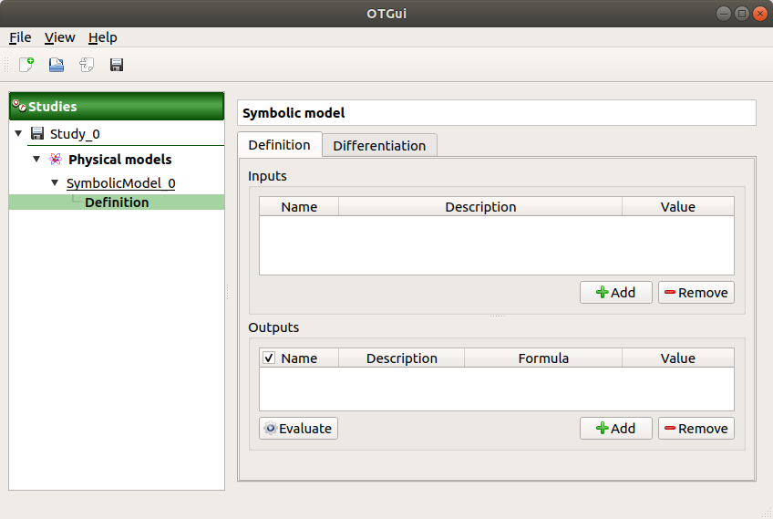Use the Add buttons below the tables to add as many lines as number of variables in the physical model.

Fill the tables and rename variables to correspond to the physical model. Click on the Evaluate button below the output variables table in order to check if the formula is not badly defined.

The value of the output must be if:
E |
F |
L |
I |
|---|---|---|---|
3e7 |
3e4 |
255 |
400 |
2-3 Create the probabilistic model¶
To define the probabilistic model, choose Probabilistic model in the context menu of the sub item Definition of the model in the study tree. Only one probabilistic model by physical model can be defined.

The probabilistic model is defined by associating a distribution to input variables (Marginals tab) and specifying dependence between them if necessary (Dependence tab).

The Marginals tab lists automatically all the input variables defined in the physical model window. By default, all the lines are unchecked (then all the inputs variables are deterministic) and the right side shows the variable value (the one defined in the model window).
To make a variable stochastic, check its line. Then the combobox in the second
column of the table is available and the current text is Normal.
By default, the Normal distribution is used with a mean value ![E[Input]](../../_images/math/0e41c028ca1bb4d979703d1c84b01a7f1058be83.svg) equal to the value defined in the physical model window and with a standard
deviation equal to
equal to the value defined in the physical model window and with a standard
deviation equal to
Check all the lines
Choose the right distribution for each input (Distribution column)
Change the distribution parameters values (right side) (Refer to the Inputs section).

On the left of the Dependence tab, all the stochastic input variables are listed. By default, no dependence is set between these variables.
- To add dependence between the variables and :
Select and in the list
- Click on the right arrow:
these variables are disabled in the first table (a variable can belong to only one group)
- [I, L] appears in the second table:
the default copula is the Normal copula defined by a correlation matrix equal to the identity matrix. So, at this step, and are still independent.
on the right side: set the correlation matrix

3- Central tendency analysis¶
3-1 Taylor Expansions¶
For more details on the Linear Taylor Expansions, you can consult the OpenTURNS documentation.
3-1-1 Definition¶
To perform a central tendency analysis with the Taylor expansions for the estimation of moments, choose New central tendency in the context menu of the probabilistic model item in the study tree.

Check the radio button Taylor expansions in the wizard which appears.

Click on Finish button. A new item with a default name appears in the study tree and a window is created.
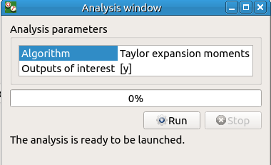Click on Run button to launch the analysis. When the analysis is finished a result window is created.
3-1-2 Results¶
The results window contains a table.

3-2 Monte Carlo¶
For more details on the Monte Carlo method, you can consult the OpenTURNS documentation.
3-2-1 Definition¶
To perform a central tendency analysis with the Monte Carlo method, click on the Central tendency box of the model diagram.

Check the radio button Monte Carlo in the wizard which appears.
Click on the Continue button to parametrize the Monte Carlo method.

To see advanced parameters, expand the Advanced parameters group.
Click on Finish button. A new item with a default name appears in the study tree and a window is created.

Click on Run button to launch the analysis. When the analysis is finished a result window is created.
3-2-2 Results¶
There are 8 tabs in the result window. The first tab must contain the following values :

4- Min/Max study with deterministic design of experiments¶
For more details on the Min/Max approach, you can consult the OpenTURNS documentation.
4-1 Definition¶
To perform a Min/Max study, choose Design of experiments in the context menu of the probabilistic model item in the study tree.

Check the radio button Deterministic in the wizard which appears and click on Continue button.

In the next table, you can set the grid parameters. By default, all lines are unchecked: the design of experiments contains only point. Check the Name column to make all the inputs variable.
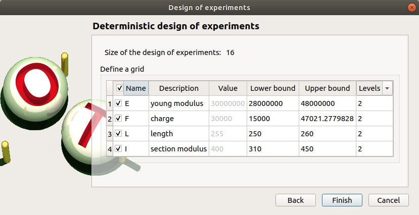The minimum and the maximum values are computed automatically from the range of the distribution of the variables. The number of used values per variable is by default 2.
Click on Finish button. A new item with a default name appears in the study tree and a window is created.
4-2 Results¶
4-2-1 Input variables¶
The result window shows the input sample of the design of experiments and an analysis of this sample.

The points are generated according to the structure of a box design of experiments. This deterministic design of experiments has 16 points obtained by regularly discretizing the pavement:
.
Click on Evaluate in the context menu of the design of experiments item. Click on the Finish button of the window which appears.

To launch the analysis click on the Run button of the new window.
4-2-2 Min/Max values¶
When the computation is finished, a new window is created. The Table tab contains the input and output values.

The first tab must contain the following values:

5- Sensitivity analysis¶
5-1 Sobol indices¶
For more details on the computation of the Sobol indices, check the OpenTURNS documentation.
5-1-1 Definition¶
To perform a sensitivity analysis with the Sobol method, the input variables must be independent (In the Dependence tab of the probabilistic model window replace -0.2 by 0). Choose Sensitivity in the context menu of the probabilistic model item in the study tree.
Check the radio button Sobol in the wizard which appears.
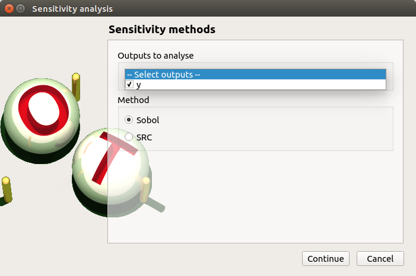Click on Continue button. On the new page, you can parametrize the Sobol method. To access advanced parameters, expand the Advanced parameters group.
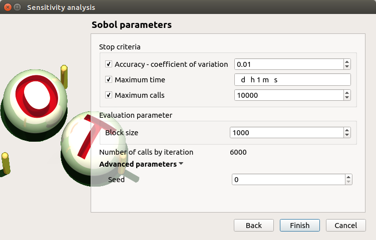Define at least one criterion to stop the algorithm.
In the current example, add a third criterion by selecting the Maximum calls check button.
Changing Replication size will update the max number of calls by iteration: Indeed the algorithm build two input samples with a size equal to the block size value and combines these samples to build nbInputs other samples (nbInputs is the number of input variables). Thus, the maximum number of calls by iteration is computed with the formula: .
If the Replication size is 1000: the maximum number of calls by iteration is 6000.
In that case the algorithm will perform two iterations. Indeed, at the second iteration the maximum number of calls will not be reached yet. The effective maximum total number of calls will be 12000.
Click on Finish button. A new item with a default name appears in the study tree and a results window is created.
5-1-2 Results¶
The result window shows a table with the first and total order indices for each variable. Values must correspond to the values of the table below.

The interaction between the variables are mentioned below the table. It is the sum of second order indices. It can be visualize on the graphic by the distances between the first order indices and the total order indices.
The warnings inform the user that a total order index is smaller than the first order index. When increasing the sample size, these warnings disappear.
On the Summary tab the value of the effective stopping criteria is written in a table.

5-2 SRC indices¶
For more details on the computation of the SRC indices ( Standard Regression Coefficients), you can consult the OpenTURNS documentation.
5-2-1 Definition¶
To perform a sensitivity analysis with the SRC method, the input variables must be independent (In the Dependence tab of the probabilistic model window replace -0.2 by 0), then choose Sensitivity in the context menu of the probabilistic model item in the study tree.
Check the radio button SRC in the wizard which appears.
Click on Continue button. On the new page, you can parametrize the SRC method. To access advanced parameters, expand the Advanced parameters group.

Set the block size to 300. In that case the algorithm will generate a sample with 34 iterations (33 iterations with a size of 300 and the last iteration with a size of 100).
Click on Finish button. A new item with a default name appears in the study tree and a results window is created.
5-2-2 Results¶
The result window contains a table with the SRC indices values for each variable. These values are plotted in a graph.

6- Threshold exceedance¶
To perform the following analyses use again a Gaussian copula (In the Dependence tab of the probabilistic model window replace 0 by -0.2).
6-1 Limit state¶
To create the limit state function which enables the definition of the failure event, choose Limit state in the context menu of the probabilistic model item in the study tree.
After clicking, a new item with a default name appears in the study tree and the following window appears:

We consider the event where the deviation exceeds . Choose the right operator in the combobox and set the value of the threshold in order to obtain the following limit state window:
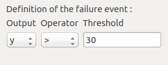6-2 Monte Carlo¶
For more details on the computation of the failure probability by the method of Monte Carlo, you can consult the OpenTURNS documentation.
6-2-1 Definition¶
To perform the Monte Carlo simulation, choose Threshold exceedance in the context menu of the limit state item in the study tree.
Select the Monte Carlo method and click on Continue button. The new page enables to change the parameters of the analysis.
The user has to define at least one criterion to stop the algorithm.
Add the third criterion by selecting the check button Maximum calls. The maximum number of calls is 10000. Set the block size to 300.
In that case the algorithm will perform 34 iterations with 300 calls to the model function.
Effective maximum total number of calls: 10200
Click on Finish button. A new item with a default name appears in the study tree and a results window is created.
6-2-2 Results¶
The result window contains the following table:

The values of the output computed during the simulation are stored and plotted in the second tab of the window:

The convergence graph is in the third tab:
This graph shows the value of the probability estimate at each iteration.
6-3 FORM¶
For more details on the computation of the failure probability by the method of FORM, you can consult the OpenTURNS documentation.
6-3-1 Definition¶
To perform the FORM (First Order Reliability Method) analysis, choose Threshold exceedance in the context menu of the limit state item in the study tree.
Select the FORM method and click on Continue button. The new page enables to change the parameters of the analysis.

The starting point is defined by default with the means of the distributions of the stochastic inputs.
6-3-2 Results¶
The result window includes the following tables.

When the maximum number of iterations has been reached, a warning icon appears nearby the iterations number value: it warns the user that the optimization result may not be accurate enough.
The Design point tab indicates the value of the design point in the standard space and in the physical space. The table contains the importance factors which are displayed in the pie chart.

For more details on the Importance factors, you can consult the OpenTURNS documentation.
The Sensitivity tab indicates the sensitivity factors. For more details on the Sensitivity factors, you can consult the OpenTURNS documentation.
6-4 FORM-Importance sampling¶
For more details on the computation of the failure probability by the method of Importance sampling, you can consult the OpenTURNS documentation.
6-4-1 Definition¶
To perform the FORM-IS (First Order Reliability Method-Importance sampling) analysis, choose Threshold exceedance in the context menu of the limit state item in the study tree.
Select the FORM-Importance sampling method and click on Continue button. The following page allows one to change the parameters of the Importance sampling analysis. It’s the same page as the one for the Monte Carlo method.
Click on Continue button. The following page enables setting the parameters of the FORM analysis. It’s the same page as the one for the FORM method.
The analysis consists in performing firstly a FORM analysis, then the computed design point is used to initialize the Importance sampling analysis.
6-4-2 Results¶
The FORM-IS result window contains the same tabs as the Monte Carlo result window as well as a FORM result tab, which displays the tabs of a FORM result window.

We can see in the following table, the design point from the FORM analysis result.
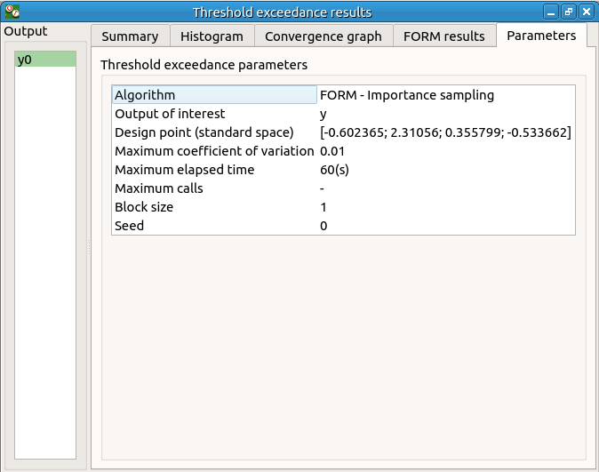The following histogram shows that, by contrast of the Monte Carlo method, the sampling is centered on the threshold of the event failure with the Importance sampling method.

7- Construction of response surfaces¶
A response surface is built from samples. So we first create a design of experiments.
7-1 Design of experiments¶
Create a design of experiments by choosing New design of experiments in the context menu of the Designs of experiments item.

Select Probabilistic and click on Continue button.

The methods LHS and Quasi-Monte Carlo are not available because the model contains dependent stochastic input variables.
Keep the default values. Click on Finish button
Choose Evaluate in the context menu of the new design of experiments item. Launch the evaluation by clicking on the Run button of the window which appears.
7-2 Functional chaos¶
For more details on the computation of a metamodel by the method of Functional chaos, you can consult the OpenTURNS documentation.
The functional chaos allows one to compute the Sobol indices. Beware that these indices cannot be used for correlated stochastic variables. In order to use these indices, replace the value -0.2 by 0 in the Dependence tab of the probabilistic model window.
7-2-1 Definition¶
Choose Metamodel in the context menu of the sub-item Evaluation of the design of experiments item.

Select the Functional chaos method and click on Continue button.

Set the chaos degree to 4 and click on Continue and then on Finish button in the next page.
Launch the analysis.
7-2-2 Results¶
The first tab of the result window displays the metamodel. The relative error expresses the quality of the metamodel.
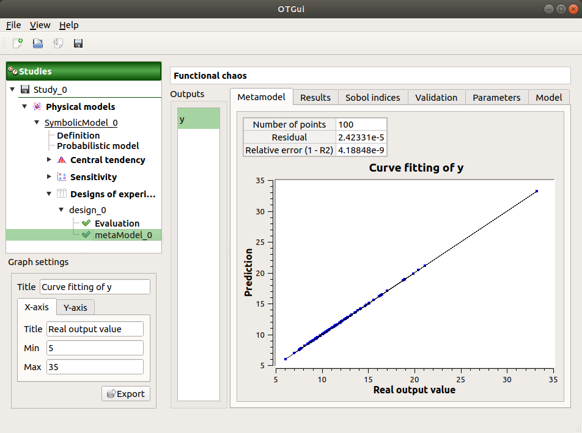The moments retrieved from the polynomial basis correspond to the result of the central tendency analyses.

The windows shows the Sobol indices. We can see that the values are similar to the ones obtained with the sensitivity analysis.

- The analysis computes a surrogate model which can be retrieved and checked:
Click on the context menu of the metamodel item.

Choose Convert metamodel into physical model. A new item MetaModel_0 appears in the study tree.
- Click on its sub-item Definition. A model definition window appears:
Evaluate the model by clicking on the Evaluate button. The output value is close to the value obtained with the analytical formula.

7-3 Kriging¶
For more details on the computation of a metamodel by the method of Kriging, you can consult the OpenTURNS documentation.
7-3-1 Definition¶
Choose Metamodel in the context menu of the sub-item Evaluation of the design of experiments item.
Select the Kriging method and click on Continue button.

Check the button By K-Fold method. For more details on the K-Fold method, check the OpenTURNS documentation. Beware the computation may be expensive: In the current example, the K-Fold method builds a metamodel five times.

Click on Finish button.
Launch the analysis.
7-3-2 Results¶
The window contains a Validation tab, which presents:
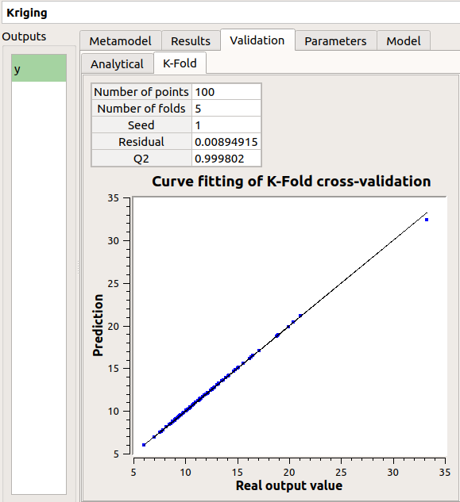
the metamodel predictivity coefficient:
the residual: .
with , the sample size;
, the real values and
, the predicted values.
Here the Q2 value is nearly equal to 1, so we can conclude that the metamodel is valid.
The Results tab displays the optimized covariance model parameters and the trend coefficients.

8- Data analysis¶
To perform the following analyses use again a Gaussian copula (In the Dependence tab of the probabilistic model window replace 0 by -0.2).
8-1 Data¶
We first create a sample for our example:
Create a design of experiments by choosing New design of experiments in the context menu of the Designs of experiments item.
Select Probabilistic and click on Continue button. Note the probabilistic experiment uses the distribution of the model to generate the sample (marginals and copula).
Set the sample size to 1000. Click on Finish button.
In the Table tab of the window click on Export button.
Save the sample in a file.
8-2 Data model¶
On the study window click on Data model.
A new item and a new window appear:

Click on the Model definition box of the diagram.
A window is created to define the model. Click on the … button and load the file created in the previous part. Define the last variable as an input by finding the right item in the combo box on the line Type.

8-3 Analysis¶
Choose Data analysis in the context menu of the sub-item Definition of the model.
Launch the analysis.
The following window appears.

In the dependence tab, we can see that the variables L and I are correlated: this is in agreement with the distribution used to generate this variable.

9- Inference¶
9-1 Definition¶
Choose Inference in the context menu of the sub-item Definition of the model.
- A window appears:
In the current example, we choose to select 3 variables (E,F,I) : uncheck L.
Add all the distributions for the other variables by choosing the All item in the combo box Add.
Click on the Finish button.

Launch the analysis.
9-2 Results¶

The inference analysis recognized a Beta distribution for the variable E: this is in agreement with the distribution used to generate this variable.
10- Dependence inference¶
To explore dependence between variables, the user can use dependence inference analysis.
10-1 Definition¶
Choose Dependence inference in the context menu of the sub-item Definition of the model.
The window which appears, may have default defined groups. There are detected from the Spearman’s matrix estimate. In the current example, the variables L and I are dependent.
By default, the Normal copula is tested. Add all the copulas by choosing the All item in the combo box Add.

Launch the analysis.
10-2 Results¶
The dependence inference analysis recognized a Normal copula for the group [L, I]: this is in agreement with the distribution used to generate this variable. The Spearman coefficient is not exactly equal to -0.2 because the sample is not large enough.
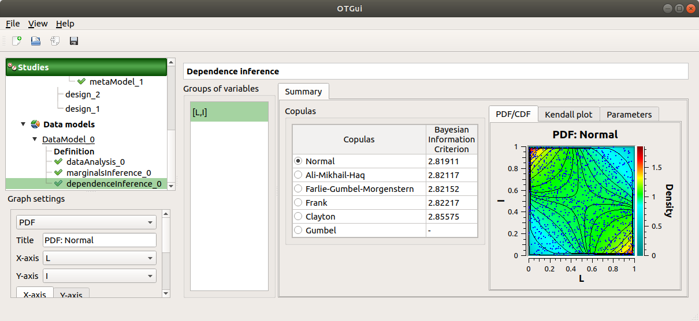 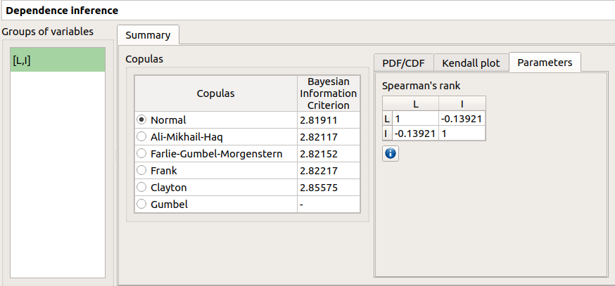